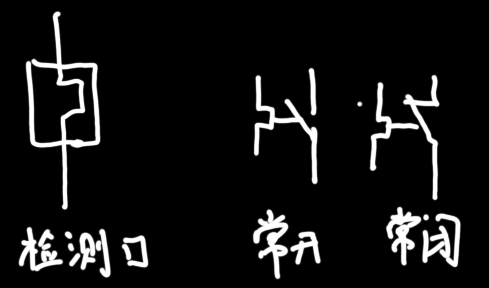
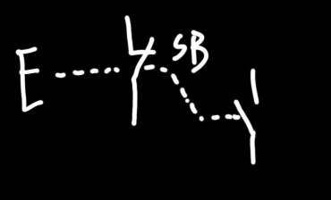

| 名称 | 字母代号 | 符号 | 描述 |
|---|---|---|---|
| 刀(负荷)开关 | QS |  | 非频繁开关电路，总闸 |
| 封闭式刀(负荷)开关(自带保险丝) | QS |  | 比较安全的刀闸 |
| 组合开关/转换开关 | QS |  | 转一下就打开 |
| 低压断路器/空气开关/自动开关 | QF |  | =闸刀+过电流继电器+失压+热继电器。通过电流的磁效应和热效应防止电流过大时烧毁主要电路。 |
| 熔断器/保险丝 | FU |  | 利用电流热效应保护主电路。短路时大量电流流经熔体，产生高温，熔体短时内融化，电路断开。 |
| 交流接触器 | KM |  | 属于同一元件编号的交流接触器默认属于同一个元件，互相联动。所以电路图中可能交流接触器的各个组件没放在一起，但并不代表不联动。线圈通电，闭着的触头先断开，开着的触头后关闭。 |
| 继电器 | 交流接触器的控制线圈通交流电，继电器的通直流 | ||
| 热继电器 | FR |  | 主电路的供电线流经检测口，若过流，导致检测口中的双金属片中其中一个弯曲，另外一个不弯曲，因此双金属片产生弧度。弯曲的金属片先顶开闭着的触头，然后接到开着的触头上。 |
| 按钮 | SB |  | 按钮，控制小电流的，不建议直接控制主电路（先控制交流接触器，交流接触器控制主电路）。按钮间也可以联动，常闭按钮与常开按钮间也可以联动。 |